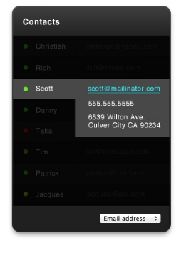

The goal of the project

My first step was thinking through what a client would ask about during the presentation. Things the client may say --
#1 to #3 is easy CSS stuff. Not worried!
#4 is where setting this project up properly will make my life easier in the long run.
I made a placeholder json file that contained name/address/info/etc. I then made two functions, a getData and a generateTable that ran async because they're using fetch and javascript promises.
getData fetches the JSON. generateTable turns each JSON object into a html <tr> piece of content. Within generateTable's function, you can also modify how you arrange the content.
Once I got the JSON data to display, I set up a quick and dirty version of the app. No focus on design, just pure functionality.
I put a <table>, created a <select> with two options (email/phone).
This helped me figure out how to best display the colored circle status indicator. I went back and modified the hardcoded JSON file to include a 'status', which included a color - in case future statuses occured (i.e. what if they want a Not available except via email?). While it's important not to over-engineer, this was a quick and easy future-proofing, so why not?
This also helped me think through how to get that Third image concept to work.

This is where it got fancy.
Let's start with the easy thing: Changing phone numbers when you change the selector.
The logic to display data in the table exists in generateTable(). Inside was a conditional to say, "In column 2... show me the email! Or show me the phone number!" I set up a quick global variable boolean called --> isSecondRowShowingEmail and a event listener to check if there's a change.
(Note: I like my variable booleans to be questions.
isSecondRowShowingEmail = true
makes it easy for me to understand at a glance. My preference is I
rather have longer variable names if it helps with code readibility.
Because 99.9% of the time, I don't remember the code i write and I'm the
one to fix it. :-D )
Now the hard thing: How the heck do I go about showing the extra data when a row is clicked, at that exact spot?
I've done this with menus where you right-click, and a div element pops in to recreate the 'windows right click'. But to tie it to that exact corner of the table cell?
Jquery had functionality right out of the box to handle this. And since we're JQuery-free, I had to do some research. And it found it here!
This is where it got fancy.
Let's start with the easy thing: Changing phone numbers when you change the selector.
The logic to display data in the table exists in generateTable(). Inside was a conditional to say, "In column 2... show me the email! Or show me the phone number!" I set up a quick global variable boolean called --> isSecondRowShowingEmail and a event listener to check if there's a change.
(Note: I like my variable booleans to be questions.
isSecondRowShowingEmail = true
makes it easy for me to understand at a glance. My preference is I
rather have longer variable names if it helps with code readibility.
Because 99.9% of the time, I don't remember the code i write and I'm the
one to fix it. :-D )
Now the hard thing: How the heck do I go about showing the extra data when a row is clicked, at that exact spot?
I've done this with menus where you right-click, and a div element pops in to recreate the 'windows right click'. But to tie it to that exact corner of the table cell?
Jquery had functionality right out of the box to handle this. And since we're JQuery-free, I had to do some research. And it found it here! TL;DR: getBoundingClientRect() is the solution
What isn't seen in the code is the handleful of console.logs to play with the coordinates and generate the content inside the box.
Now to up it to 11!
My experience as a web developer has shown that getting the functionality to work as a ugly prototype is barely half the battle. Getting the functionality to work with the actual design & layout is what matters.
I messed with the CSS and layed out the project. You might see a #app element in the HTML because I'm so used to js frameworks now. You will also see things built around it.
To match the colors, I opened up the file in a photo editing tool.
For gradients, I googled a generator for that - because gradients in CSS is hard.
I tested the design on various screens sizes - and no issues there.
This is where the little things really started to show. In the third screen is a overlay. Column 1's box clearly shows the name, and Column 2's box shows the additional data. The table is darkened, but that cell column is bright. How does that work?!
My workaround was to create TWO elements on TOP of the file, and turn them on/off with opacity, to appear where I click. Then when you clicked out of the content, the boxes turn off and hide in the upper-left corner.
I reviewed the design to match the colors better. My screen seems weird - I wrote purple as a color, but it showed blue. So here's hoping the colors work accurately on your screens!
I also renamed a few weird classes to better reflect their use-cases. Again, I'm banking that i'd be the primary maintainer, so I worked on readability.
Overall - this was one of those fun projects where I knew 90% is solvable, and the other 10% was trying a bunch of tests until it works -- and then focusing on cleaning things up for production.
After completing any project, I like to review the details once more in case I miss anything. When I read the We wish to assess your CSS skills part, I freaked out because I was unsure if you wanted me to recreate the image complete, or have a working app. But the latter sentence about looking at the JS skills made me believe that you're looking for a working production-ready app.
I typically ask a lot of questions for clarity during a project to avoid these minor freak outs.
Panic avoided. :-)